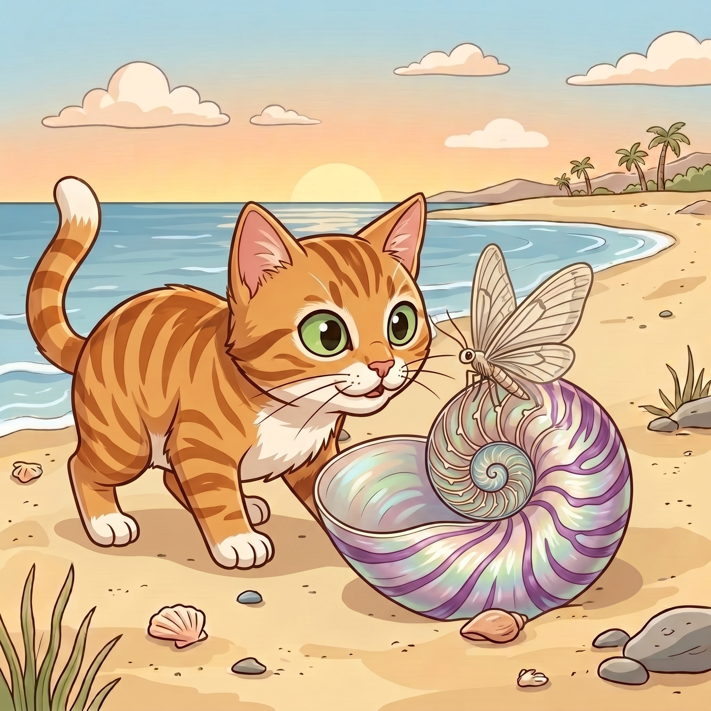

Step 1 · Say the Sound Team
th
t and h make a new sound, like thin.
🪶thin
🪨thick
🦋moth
Read th words. Then read one tiny story.

t and h make a new sound, like thin.
Beach Cat saw a moth.
The moth was thin.
It sat on a thick shell.
“What is that thing?” said Cat.
The moth went up.
Beach Cat looked up, too.
You read th words like thin, thick, moth, and thing.
You read th at the start and end of words.
If it still feels fun, read the story one more time.